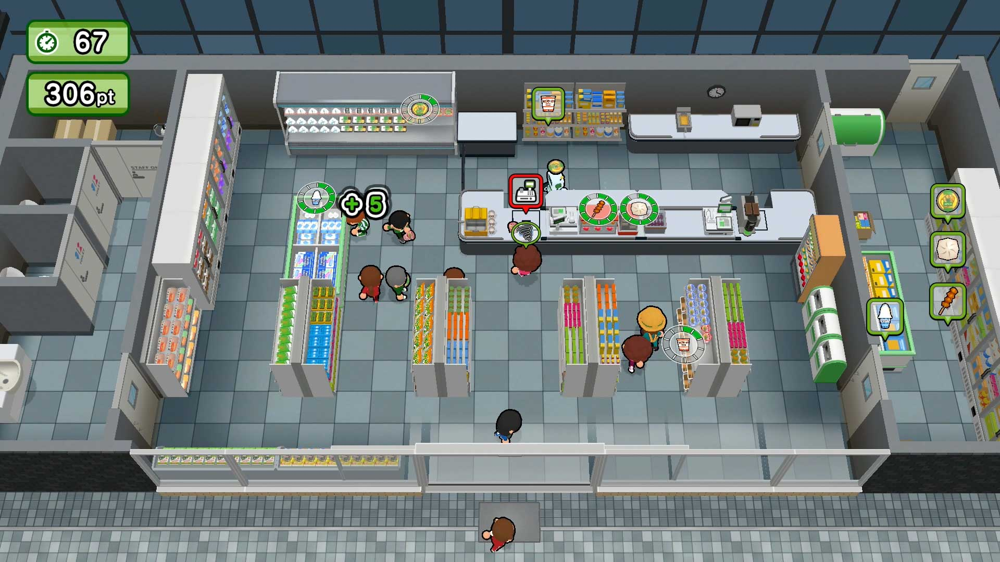
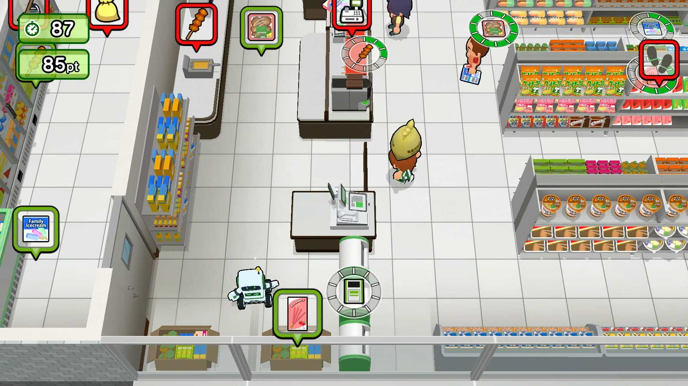

ワンオペで品出しも調理もするコンビニの忙しすぎる業務をこなせ！と言いつつロボと2人協力プレイもできるドタバタACT『ワンオペ！コンビニ』配信開始
https://
gamespark.jp/article/2026/0
5/14/166398.html?utm_source=twitter&utm_medium=social&utm_content=tweet
…
https://
x.com/i/status/20547
73701456089385/video/1
…

